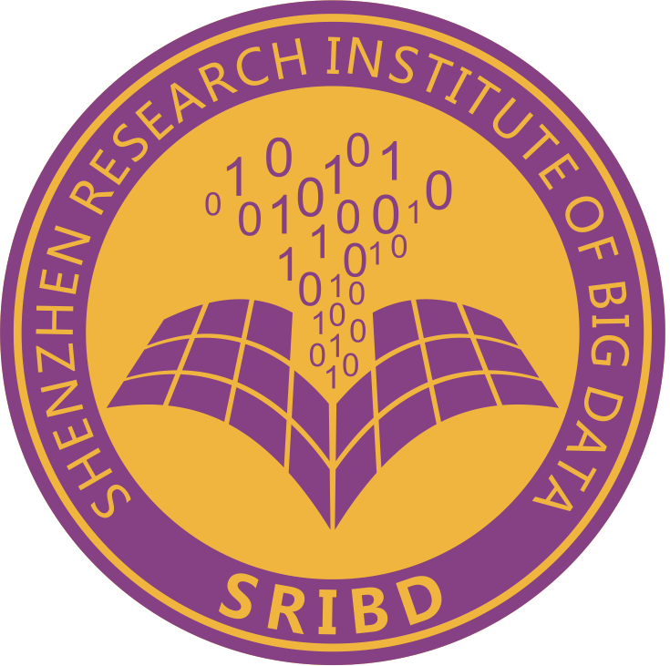

|
I am an incoming M.Sc. student in Artificial Intelligence at The Chinese University of Hong Kong. I received my Bachelor's degree in Electronic and Computer Engineering, with a minor in Artificial Intelligence, from The Chinese University of Hong Kong, Shenzhen, where I was fortunate to work with Prof. Xiaoying Tang in T-Lab. My research focuses on building large language models and agents that can reason, retrieve, and act reliably in complex, knowledge-intensive environments. [Read More] e.g., Multimodal Reasoning (ICML26'), Code Intelligence (ACL26'), Agentic Systems (NeurIPS26' Sub.), Federated Learning (ICIC25'). Currently, I am seeking an internship opportunities. If you are interested in my work or would like to discuss potential collaborations, please feel free to reach out via email. Email: yuhuo[at]link[dot]cuhk[dot]edu[dot]cn |
// Keep Moving Forward
|
|
|
|
Only (co-)first author papers are listed. (* indicates equal contribution)
|
|
The Chinese University of Hong Kong
2026.09 – 2028.03 (Expected)
M.Sc. in Artificial Intelligence
The Chinese University of Hong Kong, Shenzhen
2022.09 – 2026.05
B.Eng. in Electronic & Computer Engineering Minor in Artificial Intelligence MGPA: 3.60/4.00, Top 6 in Major |
|

Shenzhen Research Institute of Big Data
2025.10 – Present
Research Assistant
Guangdong Provincial Key Laboratory of Future Networks of Intelligence
2025.10 – Present
Research Assistant Advised by Prof. Xiaoying Tang
Huawei Technologies Co., Ltd.
2025.07 – 2025.10
AI Algorithm Engineer
The Shenzhen Institute of Artificial Intelligence and Robotics for Society
2025.03 – 2025.07
Research Assistant Advised by Prof. Xiaoying Tang
Tencent Online Advertising BG
2024.10 – 2025.05
Researcher
School of Science and Engineering, CUHK-Shenzhen
2023.03 – 2024.06
Undergraduate Research Assistant Advised by Prof. Xiaoying Tang Undergraduate Research Award (2025, 2026) |
|
Conference Reviewer: AAAI 2025, IJCNN 2026, ICML 2026, NeurIPS 2026 Journal Reviewer: TMC |
|
|